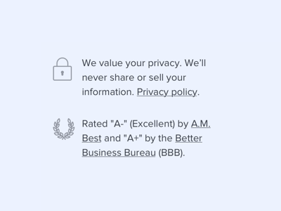
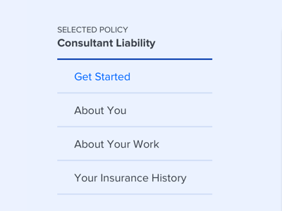
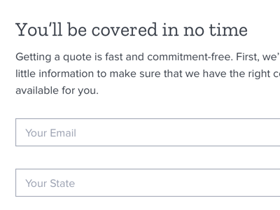
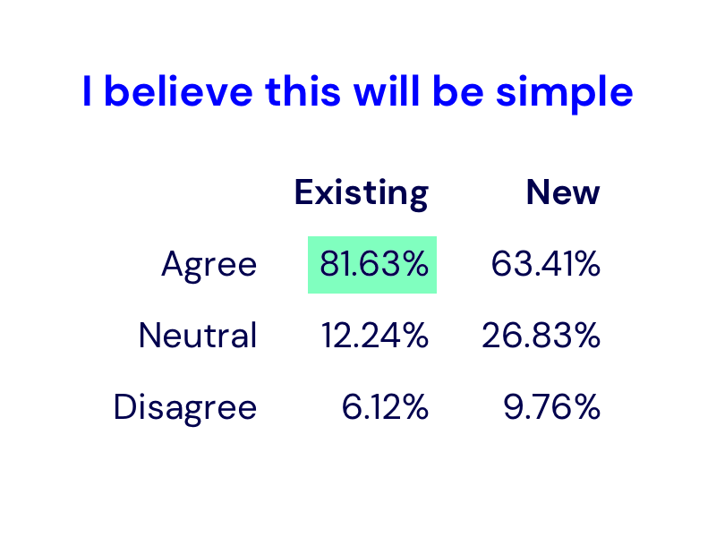
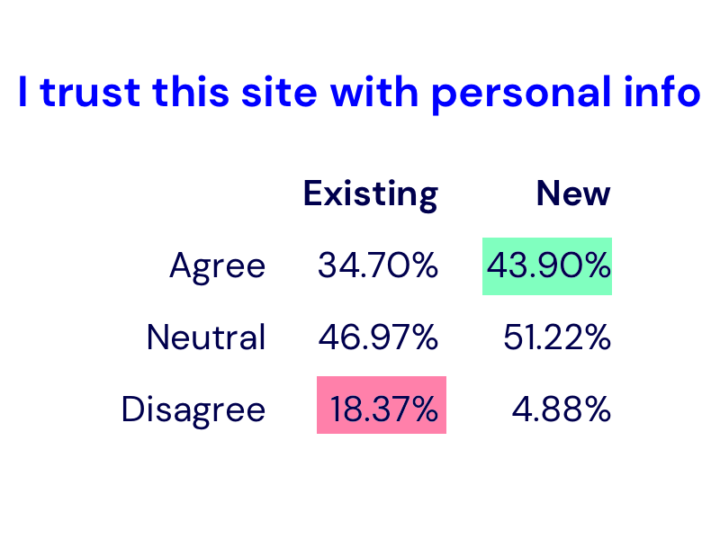
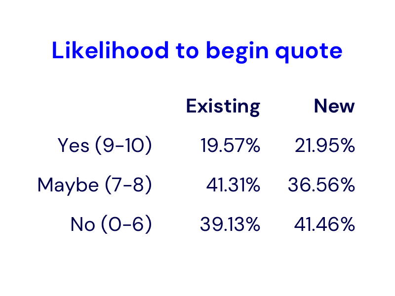
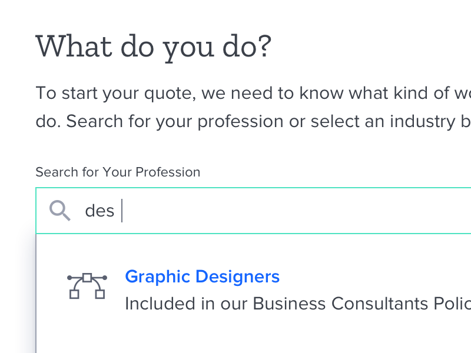
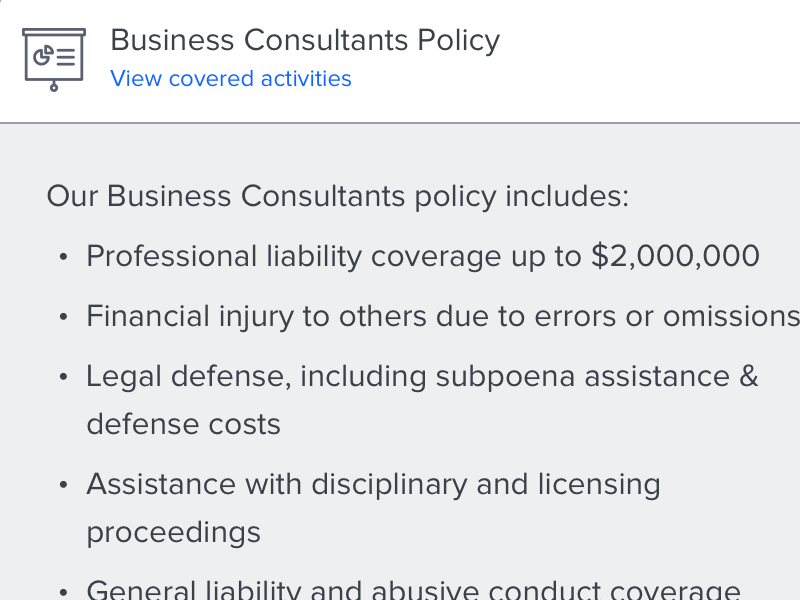
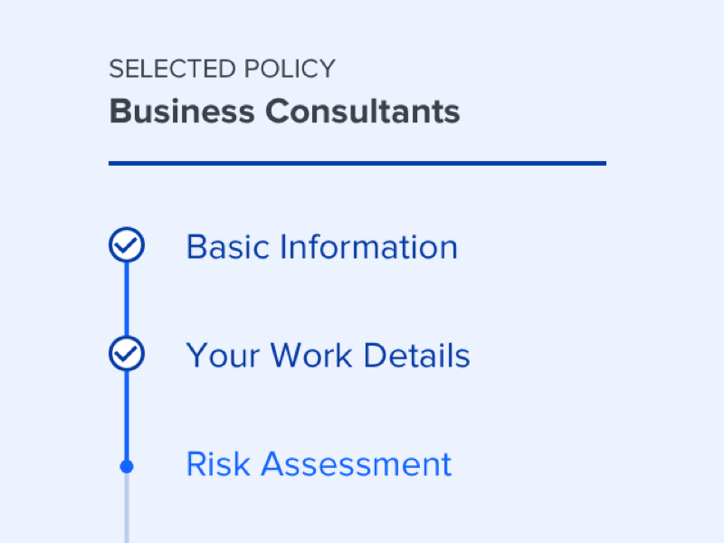

Interviewing Our Customers
Selling liability insurance to independent business owners is a bit of a tricky thing: most customers don't think they need it and those who do don't know much about it. But at this point I knew we were getting interest in our product, but weren't converting well.
So the first step was to conduct several user interviews. There were two goals for the research:
- Gain a sense for how well prospective customers understood liability insurance
- Establish a baseline for how customers felt about our user experience
Setting a Baseline
The interviews targeted independent professionals within our product's target audience. After finding success with DJs and fitness professionals, we were prepared to roll out a broader range of professions. We didn't know much about these users or their expecations.
Starting each session, I asked several questions to get a sense of how they viewed liability insurance and their overall understanding of the product. What I found was a wildly varying answer, correlating strongly with their profession. DJs or group fitness trainers, for example, were prompted by certain venues to get insured. Whereas more independent professions, like business consultants or nutritionists, had little to no understanding of liability insurance.
After these questions, they were shown our Purchase Funnel from homepage to quote as well as that from our closest competitor. What we found was that, although our UX was much easier to use and delightful, we were doing a much worse job at explaining the product and purchase process. Several interviewees distrusted our experience, stating that it was too easy. There was a belief that insurance is a complex product, asking too little of the customer made them weary that it was a trustworthy insurer.
Back to the Drawing Board
There were a few key pain points that were identified in our funnel. Due to the design of the marketing site, some customers may enter with their profession already chosen, but not all. This led to a disjointed experience. I drew up a few revisions to the flow until it was uniform for all users.
In addition to being a more streamlined, the new flow created opportunites for improvement. With a standardized sequence, the design could now properly set expectations before the user begins their journey. Also, the excluded activity disclaimer—which was previously shoehorned in—could now be presented in a much more approachable way.
Once that was sketched out, I started to wireframe a more concrete version of what the screens would actually look like. This took into acount more feedback from the research, such as relabeling "specialties" as "professions" and making your product selections clearer.
Polishing it Up
From there, I started working on a conceptual redesign of the Purchase Funnel focused on 3 main areas:
-

1. Building Trust
In an industry dominated by centuries-old companies, ProSight has a long way to go to earn consumers' trust. Here, I added a few reminders that we are legitimate and safe to do business with.
-

2. Setting Expectations
The new design added a number of visible steps to the process. Previously, there was no indication of how many steps were required. Now, the stage is set in an expected and manageable way.
-

3. Maintaining Simplicity
The copy was rewritten in a friendlier and more transparent tone. This not only served to make the UI more approachable, but throughout the funnel, helped educate the customer along the journey.
Validating the Concept
To validate this design, I created a simple survey using Helio to quickly simulate an A/B test versus our existing design. With a sample of over a hundred users, we received statistically significant results.
Analysing the Results
Based on the survey, I found that the new design improved perceived trust significantly, while also giving a slight improvement to the likelihood to proceed through the funnel. However, the users did not think the new design was as simple as the existing design.



Digging deeper into the responses, we found that the biggest hit to perceived simplicity was step labelled "Insurance History" which reminded users of horrible experiences of long and complex processes with other insurers. Changing this label would help considerably.
The Refined Design
Once the research was wrapped up conclusively, I set out to redesign the entire flow keeping the same three principles in mind. This required not only UI work, but rethinking the flow in a more straightforward way that guided users more carefully while explaining the product
-

Streamlined Application
The application process was standardized to accommodate users from wherever they enter, whether it's from the homepage, a landing page, or a direct link. This ensures that all customers are given similar expectations.
-

Clear Product Details
Easy to understand product details have been added earlier in the purchase funnel to give a clearer picture of what you're buying. Previously, customers had to finish this process before seeing much detail on their coverage.
-

Process Explanation
The application questions are now grouped logically into purposeful steps. This serves not only to establish an expected process, but to build trust and confidence that we are only asking for personal information as needed.
The Results
From there, I fleshed out the full flow and got it ready for production. Unfortunately, due to shifting priorities in the company, the project was deprioritized. It's on the shelf and ready to be developed whenever a green light is given. You can see a bunch of the key screens on Dribbble.
What I Learned
User expectations can never be assumed. Even on a tight timeline, it's important to conduct user research. It doesn't have to be formal and scientific—use whatever tools you can to get out there and start testing your designs as much as possible.